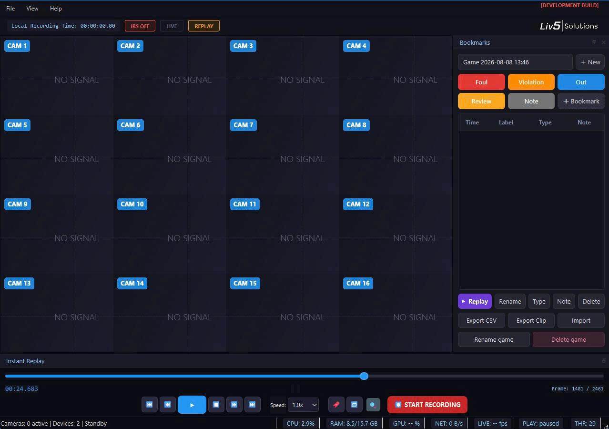
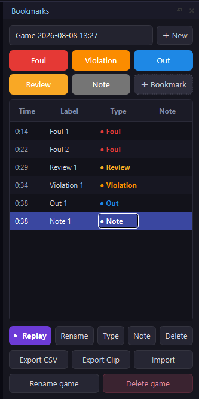
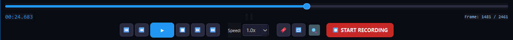
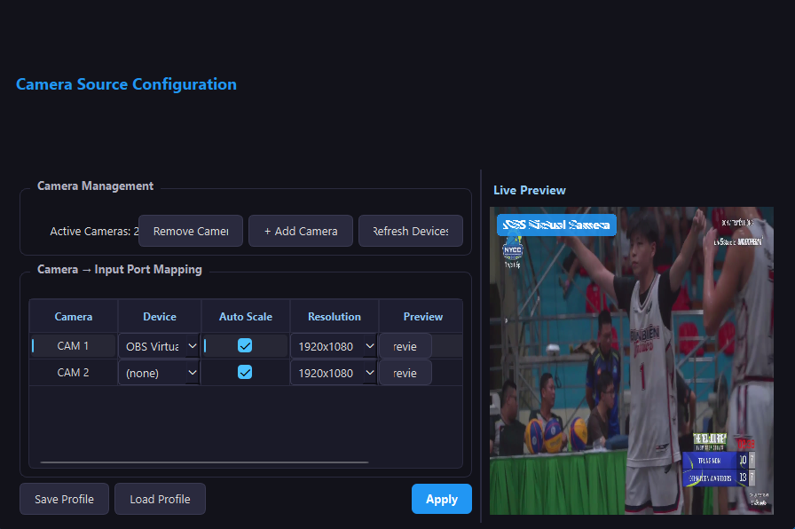
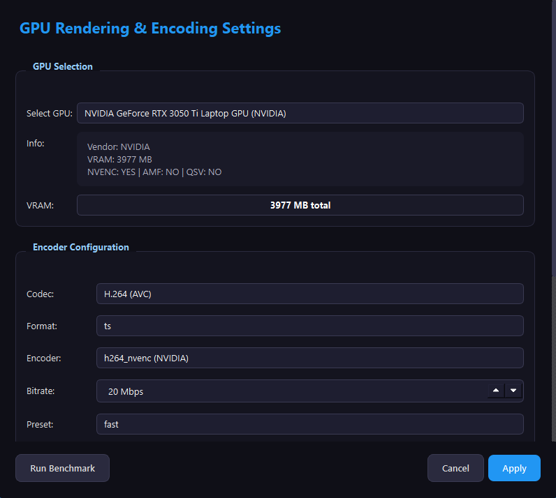

Mỗi tính năng đều được thiết kế theo tinh thần Luật bóng rổ FIBA và quy trình vận hành thực tế tại sân đấu.
Xem lại tình huống từ nhiều góc camera khác nhau, tận dụng hạ tầng quay hình sẵn có của giải đấu hoặc đơn vị livestream thay vì phải đầu tư hệ thống phần cứng riêng.

Hệ thống tiếp tục ghi hình liên tục ở nền trong khi trận đấu vẫn diễn ra. Trọng tài đánh dấu Foul, Violation, Out, Review chỉ với một cú chạm, sau đó tua chậm, xem từng khung hình (frame-by-frame) để truy xuất nhanh.


Quản lý và ánh xạ nhiều nguồn camera vào từng cổng nhập với độ phân giải tùy chỉnh, xem trước hình ảnh trực tiếp ngay trong lúc thiết lập — giúp đội kỹ thuật lắp đặt nhanh trước mỗi trận đấu.

Tự động nhận diện GPU và cho phép tinh chỉnh codec, bitrate, preset mã hóa để cân bằng giữa chất lượng hình ảnh và hiệu năng — vận hành ổn định trên nhiều cấu hình máy tính khác nhau, không cần đầu tư phần cứng chuyên dụng.
